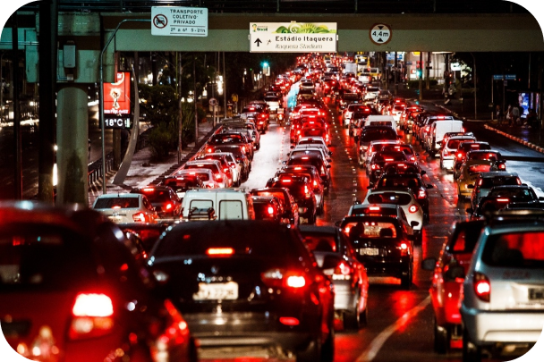

01
TRANSPORTE DE MASSA
Mais pessoas, menos carros
Metrôs, trens e corredores de ônibus transportam grandes volumes de passageiros e reduzem a dependência do automóvel. Para funcionar bem, precisam de frequência, integração e prioridade no espaço viário.